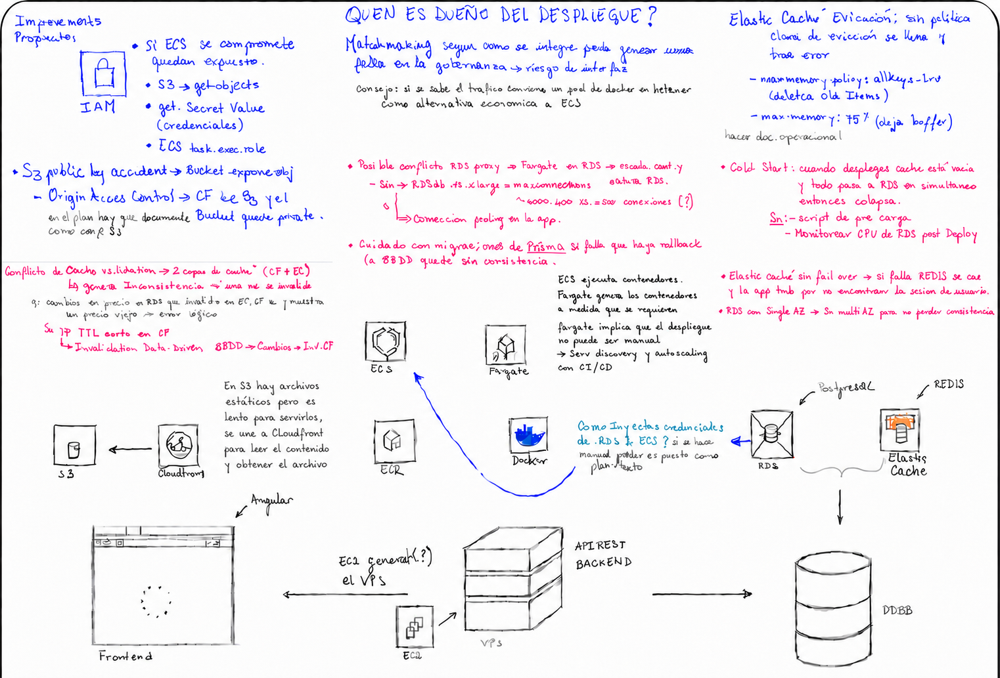

Contexto
Una aplicación web con frontend Angular, backend API REST y base de datos PostgreSQL debía desplegarse en AWS. El plan original contemplaba ECS con Fargate para los contenedores, RDS para la base de datos, ElastiCache (Redis) para caché y sesiones, S3 con CloudFront para activos estáticos, y EC2 como generador del VPS.
En 36 horas de trabajo intensivo y colaborativo con desarrolladores, solution architects e ingenieros, se revisó la arquitectura completa, se identificaron riesgos y se propusieron mejoras concretas antes de llegar a producción.
El análisis se realizó en equipo multidisciplinario. El rol de PM en este contexto fue estructurar los hallazgos, documentar los riesgos, hacer las preguntas correctas y asegurar que cada problema identificado tuviera un responsable y una propuesta de resolución. Los hallazgos en azul corresponden a cambios críticos fundamentales; los en rosa a conflictos o errores que requerían corrección.
Arquitectura analizada
El stack completo bajo análisis:

Hallazgos y mejoras propuestas
Se identificaron 9 riesgos distribuidos en seguridad, disponibilidad y consistencia de datos. Cada hallazgo incluye el problema identificado y la corrección propuesta.
Lo que dejó el análisis
9 riesgos identificados antes de producción — ninguno tuvo que resolverse en caliente con usuarios afectados.
El trabajo colaborativo con devs, solution architects e ingenieros en 36 horas intensivas demostró que la coordinación técnica multiplica la capacidad de detección: cada rol vio lo que los demás no podían ver solos.
La documentación estructurada de hallazgos — con tipo de riesgo, descripción y recomendación — permitió priorizar y asignar responsables sin ambigüedad.
El rol del PM en un análisis técnico no es saber todo — es saber qué preguntar, estructurar lo que el equipo encuentra y asegurar que nada quede sin dueño.